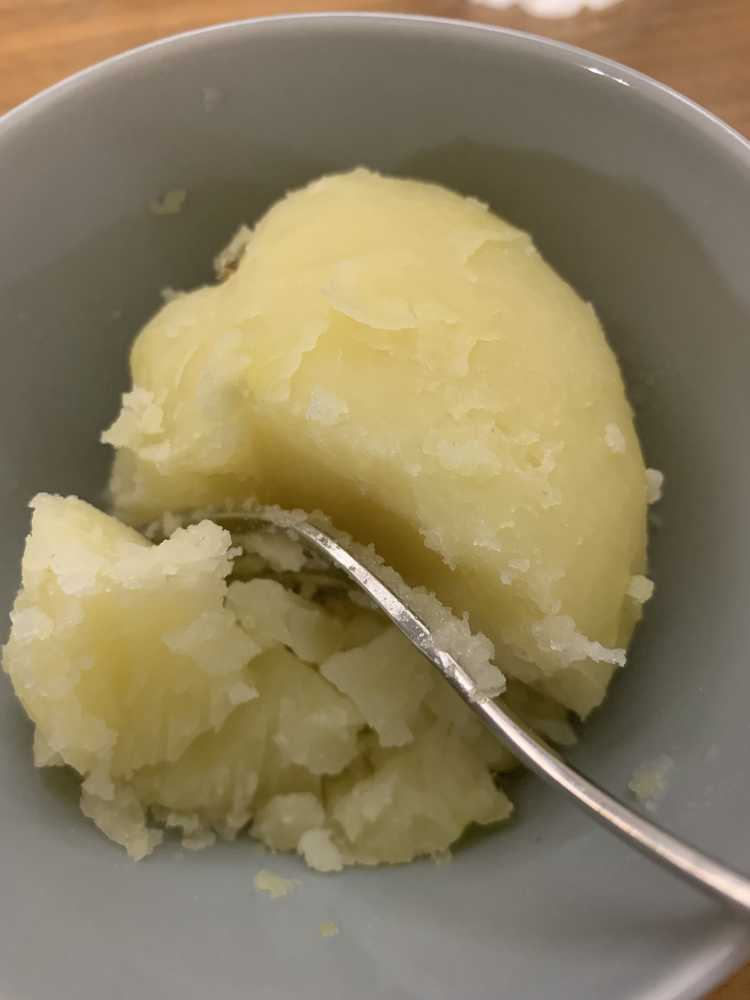

이호
미안해요 ㅠㅠ
많이 늦었죠?
괜찮아요?
ㅋㅋㅋㅋㅋㅋㅋㅋㅋㅋㅋㅋ
바쁘고도 여유롭게? 띵가띵가한 채연이..
✍🏻띵가띵가=あそぶ, じゆうに自分がやりたいことする
뭐했는 지 궁금하셨을 이호을 위해
요약해서 사진과 함께 메일을 보냅니다.
뭔데 이렇게 진지한 지...? 모르겠지만
스따뚜
7/16
엄마랑..참 많은 일을 했..
서울에서 집까지 무려 왕복 2번 했네요...
여권 사증을 추가해야하는 데
여권을 숙소에 두고 집을 왔..
정말 나는 바보다.
숙소로 다시 가서
다시 간 김에 시장을 갔습니다.
옥수수 사고 과일 사가지구..야금야금 옴뇸뇸뇸 아삭아삭
무튼, ‘아하!이제 집 쪽에서 사증을 추가해야겠다!!’
해서 추가를 했죠?
근데 알고보니까 이걸 그 날 내에 회사에 제출해야됐어...
키야아 이럴수가
뭐 어떻게.. 비행기는 타야지 ㅠㅠ 하고 제출하고 왔어요.
나보다 엑셀 밟은 우리 엄마가 고생했지만
그래도 이야기 할 수 있는 시간이 있었구만요~~~
그리구 집을 와서
찐감자가 먹고 싶었던 채연이는
먹었습니다..
with. SUGAR さとう

제가 쪘어요:)